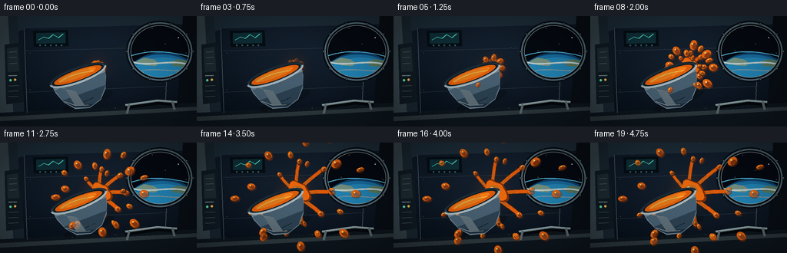
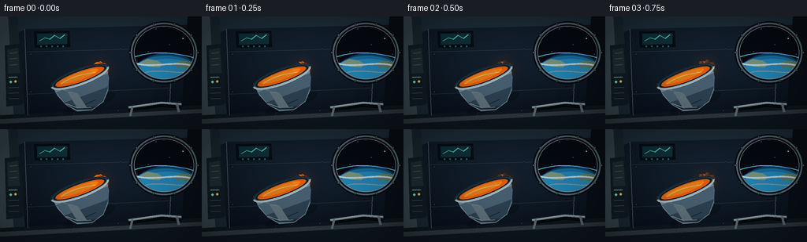
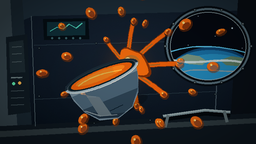

CODING AGENTS AS PIXEL WORLD MODELS
traex/GPT-5.6-Sol · mechanics_0000
点击播放 · 原生 RGB 像素
逐轮保存的候选
回放视频、检查图与代码变化。
每份候选均可单独播放。实际图片检查记录在下方工具轨迹中。
候选 01播放与检查图
点击播放 · 原生 RGB 像素


展开代码变化
--- 上一保存版本
+++ 本次保存版本
@@ -0,0 +1,331 @@
+from pathlib import Path
+import math
+import numpy as np
+from PIL import Image, ImageDraw, ImageFilter
+import artifact_io
+
+# Deterministic procedural animation. All geometry is authored at 3x resolution,
+# then reduced with Lanczos filtering for clean edges.
+W, H, N = 256, 144, 20
+S = 3
+CW, CH = W * S, H * S
+ROOT = Path(__file__).resolve().parent
+rng = np.random.default_rng(8127)
+
+
+def sc(v):
+ return int(round(v * S))
+
+
+def box(b):
+ return tuple(sc(x) for x in b)
+
+
+def pts(seq):
+ return [(sc(x), sc(y)) for x, y in seq]
+
+
+def line(draw, seq, fill, width=1, joint="curve"):
+ draw.line(pts(seq), fill=fill, width=max(1, sc(width)), joint=joint)
+
+
+def ellipse(draw, b, fill=None, outline=None, width=1):
+ draw.ellipse(box(b), fill=fill, outline=outline, width=max(1, sc(width)))
+
+
+def polygon(draw, seq, fill):
+ draw.polygon(pts(seq), fill=fill)
+
+
+def bezier(p0, p1, p2, p3, steps=24):
+ out = []
+ for i in range(steps + 1):
+ t = i / steps
+ u = 1 - t
+ out.append((u**3*p0[0] + 3*u*u*t*p1[0] + 3*u*t*t*p2[0] + t**3*p3[0],
+ u**3*p0[1] + 3*u*u*t*p1[1] + 3*u*t*t*p2[1] + t**3*p3[1]))
+ return out
+
+
+def make_background():
+ # Cool metallic wall with a very slight vignette and deterministic texture.
+ yy, xx = np.mgrid[0:CH, 0:CW]
+ nx = xx / CW
+ ny = yy / CH
+ light = 8 * (1 - ny) + 5 * np.exp(-((nx-.53)**2 + (ny-.34)**2)/.16)
+ vign = 14 * ((nx-.5)**2 + (ny-.5)**2)
+ noise = rng.normal(0, 1.1, (CH, CW))
+ arr = np.empty((CH, CW, 3), dtype=np.float32)
+ arr[..., 0] = 10 + light - vign + noise*.45
+ arr[..., 1] = 19 + light*1.25 - vign + noise*.55
+ arr[..., 2] = 29 + light*1.65 - vign + noise*.70
+ arr = np.clip(arr, 0, 255).astype(np.uint8)
+ im = Image.fromarray(arr, "RGB").convert("RGBA")
+ d = ImageDraw.Draw(im)
+
+ # Large structural ribs and perspective wall panels.
+ polygon(d, [(0,0),(256,0),(256,10),(33,16),(0,29)], (29,45,57,255))
+ polygon(d, [(0,0),(22,0),(33,144),(0,144)], (25,39,49,255))
+ polygon(d, [(0,0),(10,0),(18,144),(0,144)], (53,68,76,255))
+ polygon(d, [(256,0),(238,0),(229,144),(256,144)], (9,15,22,255))
+ polygon(d, [(0,126),(256,113),(256,144),(0,144)], (14,23,31,255))
+ polygon(d, [(0,131),(256,118),(256,123),(0,137)], (45,57,62,255))
+ line(d, [(31,16),(35,126)], (83,101,108,255), .7)
+ line(d, [(220,11),(215,116)], (65,81,91,220), 1)
+ line(d, [(34,45),(219,40)], (54,75,86,150), .7)
+ line(d, [(35,99),(217,91)], (52,72,82,150), .7)
+
+ # Left service/equipment bay.
+ polygon(d, [(6,37),(27,34),(30,112),(8,115)], (16,27,35,255))
+ polygon(d, [(9,42),(23,40),(25,72),(10,73)], (29,43,50,255))
+ for y in [47,54,62]:
+ line(d, [(12,y),(21.5,y-.6)], (78,93,97,255), 1)
+ ellipse(d, (12,82,15,85), (91,230,171,255))
+ ellipse(d, (18,81.4,21,84.4), (245,178,76,255))
+ for y in [91,98,105]:
+ line(d, [(11,y),(23.7,y-.8)], (65,81,87,255), 1)
+ # Small stenciled-style bars on the equipment panel.
+ for x0, length in [(11,9),(11,6),(18,4)]:
+ polygon(d, [(x0,77),(x0+length,76.5),(x0+length,77.8),(x0,78.3)], (109,128,130,220))
+
+ # Circular observation port with Earth outside.
+ win = Image.new("RGBA", (CW,CH), (0,0,0,0))
+ wd = ImageDraw.Draw(win)
+ ellipse(wd, (167,9,249,83), (5,9,17,255))
+ # sparse stars
+ for sx, sy, sr in [(180,22,.6),(198,16,.45),(232,28,.7),(215,36,.4),(242,48,.45),(188,45,.4)]:
+ ellipse(wd, (sx-sr,sy-sr,sx+sr,sy+sr), (205,227,236,220))
+ # Earth limb: several nested ellipses clipped later to the porthole.
+ ellipse(wd, (163,47,260,121), (12,63,104,255))
+ ellipse(wd, (160,50,260,116), (24,108,159,255))
+ ellipse(wd, (164,54,262,120), (34,132,180,255))
+ # cloud and land curves
+ polygon(wd, [(177,59),(187,54),(199,56),(207,61),(202,65),(189,64)], (151,187,158,190))
+ polygon(wd, [(220,60),(231,56),(245,58),(249,63),(238,66),(226,65)], (125,169,127,170))
+ line(wd, bezier((170,59),(194,68),(224,53),(254,66)), (222,240,237,210), 2.2)
+ line(wd, bezier((181,72),(204,65),(230,76),(253,68)), (205,230,232,150), 1.2)
+ # Atmosphere glow.
+ line(wd, bezier((166,53),(193,42),(230,45),(258,57)), (93,206,246,220), 1.4)
+ # clip to inner ellipse
+ m = Image.new("L", (CW,CH), 0)
+ md = ImageDraw.Draw(m)
+ ellipse(md, (169,11,247,81), 255)
+ win.putalpha(Image.composite(win.getchannel("A"), Image.new("L",(CW,CH),0), m))
+ im.alpha_composite(win)
+ d = ImageDraw.Draw(im)
+ # porthole rims and bolts
+ ellipse(d, (164,6,252,86), None, (6,12,18,255), 6)
+ ellipse(d, (166,8,250,84), None, (81,104,115,255), 2)
+ ellipse(d, (170,12,246,80), None, (137,157,161,170), .8)
+ for a in np.linspace(0, 2*math.pi, 10, endpoint=False):
+ cx, cy = 208+43*math.cos(a), 46+38*math.sin(a)
+ ellipse(d, (cx-1.3,cy-1.3,cx+1.3,cy+1.3), (99,112,115,255), outline=(18,27,32,255), width=.5)
+
+ # A display and cabin handrail establish scale.
+ polygon(d, [(43,19),(88,18),(89,39),(44,40)], (5,14,20,255))
+ polygon(d, [(47,22),(85,21),(85,35),(47,36)], (15,46,55,255))
+ line(d, [(50,31),(57,27),(63,29),(69,24),(76,28),(82,23)], (77,209,183,220), 1)
+ for x in [51,58,65,72,79]:
+ ellipse(d, (x,37,x+2,39), (55,94,100,255))
+ # handrail with shadow
+ line(d, [(163,119),(205,113),(230,115)], (3,8,12,150), 5)
+ line(d, [(163,116),(205,110),(230,112)], (117,137,142,255), 3)
+ line(d, [(163,115.3),(205,109.3),(230,111.3)], (203,214,211,180), .7)
+ line(d, [(168,115),(165,127)], (91,107,111,255), 3)
+ line(d, [(224,111),(227,122)], (91,107,111,255), 3)
+
+ # Wall fasteners.
+ for x,y in [(39,48),(39,96),(96,43),(153,41),(215,94),(94,123),(150,120)]:
+ ellipse(d, (x-1,y-1,x+1,y+1), (83,101,108,220), outline=(8,16,22,255), width=.5)
+ return im
+
+
+BACKGROUND = make_background()
+
+# fixed droplet identities: (angle degrees, final distance, radius, delay, elongation, color shift)
+DROPS = [
+ (-172,54,4.2,.02,1.18,-5), (-148,70,3.0,.06,1.10,8), (-124,57,4.7,.00,1.18,-8),
+ (-99,48,3.4,.10,1.25,4), (-78,67,5.1,.01,1.28,-2), (-57,84,3.3,.08,1.32,8),
+ (-38,62,5.4,.00,1.20,-5), (-20,91,3.2,.11,1.45,6), (0,76,4.8,.02,1.15,-4),
+ (20,61,3.0,.15,1.24,10), (40,79,5.3,.04,1.20,-7), (61,56,3.7,.00,1.25,4),
+ (83,66,5.0,.09,1.18,-5), (105,48,2.8,.02,1.30,8), (126,68,4.4,.12,1.18,-5),
+ (148,43,3.0,.03,1.25,5), (177,78,4.1,.10,1.35,-8), (-8,45,2.2,.18,1.28,8),
+ (72,37,2.4,.20,1.35,4), (-67,39,2.5,.17,1.4,-4), (156,62,2.5,.19,1.30,3),
+]
+
+
+def ease(x):
+ x = min(1.0, max(0.0, x))
+ return x*x*(3-2*x)
+
+
+def oriented_ellipse(cx, cy, rx, ry, angle, count=24):
+ ca, sa = math.cos(angle), math.sin(angle)
+ return [(cx + rx*math.cos(a)*ca - ry*math.sin(a)*sa,
+ cy + rx*math.cos(a)*sa + ry*math.sin(a)*ca)
+ for a in np.linspace(0, 2*math.pi, count, endpoint=False)]
+
+
+def draw_drop(layer, cx, cy, r, angle, elong=1.0, shift=0, alpha=255):
+ d = ImageDraw.Draw(layer)
+ rx, ry = r*elong, r/max(1.0, elong*.92)
+ # tiny soft shadow/amber fringe
+ polygon(d, oriented_ellipse(cx+.8,cy+1.0,rx+1.0,ry+1.0,angle), (127,48,7,min(130,alpha)))
+ polygon(d, oriented_ellipse(cx,cy,rx,ry,angle), (231+min(12,shift),105+shift,18,max(0,alpha)))
+ # lower-right interior shading and specular pinprick
+ polygon(d, oriented_ellipse(cx+.25*r,cy+.28*r,rx*.66,ry*.59,angle), (204,73+max(0,shift),8,min(165,alpha)))
+ ellipse(d, (cx-r*.48,cy-r*.52,cx-r*.06,cy-r*.10), (255,207,91,min(240,alpha)))
+ if r > 3.6:
+ ellipse(d, (cx-r*.28,cy-r*.34,cx-r*.10,cy-r*.16), (255,241,183,min(245,alpha)))
+
+
+def soup_cloud(source, q, frame_i):
+ layer = Image.new("RGBA", (CW,CH), (0,0,0,0))
+ d = ImageDraw.Draw(layer)
+ sx, sy = source
+
+ # Cohesive tendrils lead the moving globules, emphasizing spreading in every direction.
+ arms = [(-2.25,28,3.2),(-1.45,39,3.7),(-.72,46,4.0),(-.05,44,4.2),(.66,38,4.5),(1.35,33,4.0),(2.30,26,3.2)]
+ for j,(ang,L,wid) in enumerate(arms):
+ p = ease(max(0,(q-j*.012))/(1-j*.012))
+ length = 7 + L*p
+ # gentle curved spline sampled as a thick liquid cord
+ nx, ny = math.cos(ang), math.sin(ang)
+ tx, ty = -ny, nx
+ p0=(sx+nx*3,sy+ny*3)
+ p1=(sx+nx*length*.32+tx*2.2*math.sin(frame_i*.18+j), sy+ny*length*.32+ty*2.2*math.sin(frame_i*.18+j))
+ p2=(sx+nx*length*.70-tx*1.7,sy+ny*length*.70-ty*1.7)
+ p3=(sx+nx*length,sy+ny*length)
+ curve=bezier(p0,p1,p2,p3,18)
+ # dark outline then orange inner line, naturally taper illusion from end bulb
+ line(d, curve, (126,47,7,175), wid+1.4)
+ line(d, curve, (225,91,10,255), wid)
+ # neck highlight
+ line(d, curve[:12], (249,143,34,150), max(.7,wid*.28))
+ draw_drop(layer,p3[0],p3[1],wid*.74,ang,1.15,0)
+
+ # Main irregular zero-g blob. Harmonics make its outline organic but temporally stable.
+ cx = sx + 3.5*q
+ cy = sy - 1.2*q
+ rad = 9.0 + 7.5*q
+ outline=[]
+ for k in range(40):
+ a=2*math.pi*k/40
+ rr=rad*(1 + .14*math.sin(3*a+.35) + .09*math.sin(5*a-1.2) + .035*math.sin(frame_i*.15+7*a))
+ outline.append((cx+rr*math.cos(a)*1.10, cy+rr*math.sin(a)*.93))
+ polygon(d, outline, (132,47,5,230))
+ inner=[(cx+(x-cx)*.91-1.0, cy+(y-cy)*.89-.7) for x,y in outline]
+ polygon(d, inner, (232,102,13,255))
+ # dimensional orange-gold overlays
+ ellipse(d,(cx-rad*.55,cy-rad*.62,cx+rad*.48,cy+rad*.26),(244,133,29,180))
+ ellipse(d,(cx-rad*.40,cy-rad*.47,cx-rad*.03,cy-rad*.12),(255,227,144,235))
+ ellipse(d,(cx-rad*.24,cy-rad*.30,cx-rad*.07,cy-rad*.13),(255,248,205,240))
+
+ # Detached droplets. They begin hidden in the main blob and drift radially.
+ for j,(deg,dist,r,delay,elong,shift) in enumerate(DROPS):
+ pp = max(0.0, (q-delay)/(1-delay))
+ if pp <= 0: continue
+ travel = ease(pp)
+ ang=math.radians(deg)
+ base=6.5 + r*.45
+ dd=base + dist*travel
+ # subtle tangential zero-g wandering, coherent and slow
+ tangent=1.8*math.sin(j*2.17 + travel*1.4)*travel
+ cx2=sx+math.cos(ang)*dd-math.sin(ang)*tangent
+ cy2=sy+math.sin(ang)*dd+math.cos(ang)*tangent
+ rr=r*(.38+.62*min(1,pp*3.2))
+ draw_drop(layer,cx2,cy2,rr,ang,elong,shift,int(255*min(1,pp*5)))
+
+ return layer
+
+
+def make_bowl(angle_deg, center):
+ # Draw an untilted ceramic bowl, then rotate it as one physically coherent object.
+ sw, sh = sc(112), sc(96)
+ sp = Image.new("RGBA", (sw,sh), (0,0,0,0))
+ d = ImageDraw.Draw(sp)
+ ox, oy = 56, 44
+ # soft floating-object shadow is embedded under the ceramic.
+ ellipse(d,(ox-35,oy+20,ox+35,oy+35),(0,0,0,55))
+ # body silhouette
+ body=[(ox-37,oy-12),(ox+37,oy-12),(ox+34,oy+5),(ox+28,oy+20),(ox+17,oy+32),(ox,oy+37),
+ (ox-18,oy+32),(ox-29,oy+19),(ox-35,oy+4)]
+ polygon(d,body,(109,130,143,255))
+ # ceramic horizontal shading strips clipped approximately by nested silhouettes
+ polygon(d,[(ox-35,oy),(ox+35,oy),(ox+29,oy+18),(ox+16,oy+31),(ox,oy+35),(ox-17,oy+30),(ox-29,oy+17)],(70,94,111,255))
+ polygon(d,[(ox-30,oy+16),(ox+29,oy+16),(ox+17,oy+31),(ox,oy+36),(ox-18,oy+30)],(43,64,80,255))
+ polygon(d,[(ox-28,oy+19),(ox-18,oy+30),(ox,oy+36),(ox+8,oy+34),(ox-2,oy+31)],(32,50,65,240))
+ # lit ceramic face
+ polygon(d,[(ox-34,oy-4),(ox-22,oy),(ox-17,oy+27),(ox-5,oy+32),(ox-10,oy+10)],(151,171,179,150))
+ line(d,[(ox-28,oy+18),(ox-16,oy+28),(ox,oy+33)],(183,200,202,160),1.0)
+ # outer lip and dark cavity
+ ellipse(d,(ox-39,oy-19,ox+39,oy+2),(51,66,76,255))
+ ellipse(d,(ox-35.5,oy-16.5,ox+35.5,oy-1),(11,29,36,255))
+ # Soup remaining inside the bowl.
+ ellipse(d,(ox-32.5,oy-15,ox+32.5,oy-2),(220,91,11,255))
+ ellipse(d,(ox-27,oy-13.8,ox+25,oy-5),(243,128,26,230))
+ line(d,bezier((ox-25,oy-8),(ox-12,oy-13),(ox+9,oy-10),(ox+21,oy-7)),(255,199,78,210),1.2)
+ # front rim overlays liquid, selling containment.
+ arcbox=box((ox-39,oy-19,ox+39,oy+2))
+ d.arc(arcbox, start=3, end=177, fill=(153,173,181,255), width=sc(2.8))
+ d.arc(arcbox, start=10, end=170, fill=(222,229,226,220), width=sc(.8))
+ d.arc(arcbox, start=180, end=356, fill=(25,40,51,255), width=sc(2.0))
+ # tiny maker stripe
+ line(d,[(ox-5,oy+27),(ox+9,oy+26)],(14,34,47,150),1)
+
+ rot = sp.rotate(angle_deg, resample=Image.Resampling.BICUBIC, expand=True)
+ x=sc(center[0])-rot.width//2
+ y=sc(center[1])-rot.height//2
+ return rot,(x,y)
+
+
+def render_frame(i):
+ t=i/(N-1)
+ q=ease(t)
+ frame=BACKGROUND.copy()
+ # Very subtle bowl drift, while the soup's overall origin follows it.
+ bc=(105.5+1.1*math.sin(t*math.pi*.8), 88.5-.7*t)
+ angle=20.0+2.0*t
+ # Opening/source lies above and to the right because the bowl is tilted counterclockwise.
+ source=(126.2+1.0*math.sin(t*math.pi*.8)+1.0*t, 67.4-1.0*t)
+
+ # soft localized amber bounce-light behind the soup
+ glow=Image.new("RGBA",(CW,CH),(0,0,0,0))
+ gd=ImageDraw.Draw(glow)
+ gr=19+8*q
+ ellipse(gd,(source[0]-gr,source[1]-gr,source[0]+gr,source[1]+gr),(255,115,20,25))
+ glow=glow.filter(ImageFilter.GaussianBlur(sc(9)))
+ frame.alpha_composite(glow)
+
+ # Soup is behind the bowl/rim; this makes the stream emerge from its opening.
+ fluid=soup_cloud(source,q,i)
+ frame.alpha_composite(fluid)
+ bowl,pos=make_bowl(angle,bc)
+ frame.alpha_composite(bowl,pos)
+
+ # Two near-camera globules pass in front of the bowl late in the shot.
+ fg=Image.new("RGBA",(CW,CH),(0,0,0,0))
+ if q>.08:
+ p=ease((q-.08)/.92)
+ draw_drop(fg, source[0]-17-28*p, source[1]+21+31*p, 2.2+2.1*p, 2.22,1.3,-2)
+ if q>.22:
+ p=ease((q-.22)/.78)
+ draw_drop(fg, source[0]+5+28*p, source[1]+18+38*p, 1.7+1.3*p, 1.15,1.4,6)
+ frame.alpha_composite(fg)
+
+ # a subtle cool reflection across bowl vicinity / cinematic vignette
+ rgb=frame.convert("RGB").resize((W,H),Image.Resampling.LANCZOS)
+ ar=np.asarray(rgb).astype(np.float32)
+ yy,xx=np.mgrid[0:H,0:W]
+ vig=np.clip(1-.22*((xx-W/2)/(W/2))**2-.18*((yy-H/2)/(H/2))**2,.68,1)
+ ar*=vig[...,None]
+ return np.clip(ar,0,255).astype(np.uint8)
+
+
+def main():
+ frames=np.stack([render_frame(i) for i in range(N)],axis=0)
+ artifact_io.save(frames, ROOT)
+ print(f"saved {frames.shape} {frames.dtype} to {ROOT}")
+
+if __name__ == "__main__":
+ main()
可观测工具轨迹
实际执行的命令与返回图片。
命令 1exit 0
/bin/bash -lc "cat prompt.txt && printf '\\n--- GENERATION_RULES.md ---\\n' && cat GENERATION_RULES.md"
命令 2exit 0
/bin/bash -lc "cat task_spec.json && printf '\\n--- FILES ---\\n' && find . -maxdepth 2 -type f -printf '%p\\n' | sort"
命令 3exit 0
/bin/bash -lc 'cat artifact_io.py'
命令 4exit 0
/bin/bash -lc "cat > generate.py <<'PY'
from pathlib import Path
import math
import numpy as np
from PIL import Image, ImageDraw, ImageFilter
import artifact_io
# Deterministic procedural animation. All geometry is authored at 3x resolution,
# then reduced with Lanczos filtering for clean edges.
W, H, N = 256, 144, 20
S = 3
CW, CH = W * S, H * S
ROOT = Path(__file__).resolve().parent
rng = np.random.default_rng(8127)
def sc(v):
return int(round(v * S))
def box(b):
return tuple(sc(x) for x in b)
def pts(seq):
return [(sc(x), sc(y)) for x, y in seq]
def line(draw, seq, fill, width=1, joint=\"curve\"):
draw.line(pts(seq), fill=fill, width=max(1, sc(width)), joint=joint)
def ellipse(draw, b, fill=None, outline=None, width=1):
draw.ellipse(box(b), fill=fill, outline=outline, width=max(1, sc(width)))
def polygon(draw, seq, fill):
draw.polygon(pts(seq), fill=fill)
def bezier(p0, p1, p2, p3, steps=24):
out = []
for i in range(steps + 1):
t = i / steps
u = 1 - t
out.append((u**3*p0[0] + 3*u*u*t*p1[0] + 3*u*t*t*p2[0] + t**3*p3[0],
u**3*p0[1] + 3*u*u*t*p1[1] + 3*u*t*t*p2[1] + t**3*p3[1]))
return out
def make_background():
# Cool metallic wall with a very slight vignette and deterministic texture.
yy, xx = np.mgrid[0:CH, 0:CW]
nx = xx / CW
ny = yy / CH
light = 8 * (1 - ny) + 5 * np.exp(-((nx-.53)**2 + (ny-.34)**2)/.16)
vign = 14 * ((nx-.5)**2 + (ny-.5)**2)
noise = rng.normal(0, 1.1, (CH, CW))
arr = np.empty((CH, CW, 3), dtype=np.float32)
arr[..., 0] = 10 + light - vign + noise*.45
arr[..., 1] = 19 + light*1.25 - vign + noise*.55
arr[..., 2] = 29 + light*1.65 - vign + noise*.70
arr = np.clip(arr, 0, 255).astype(np.uint8)
im = Image.fromarray(arr, \"RGB\").convert(\"RGBA\")
d = ImageDraw.Draw(im)
# Large structural ribs and perspective wall panels.
polygon(d, [(0,0),(256,0),(256,10),(33,16),(0,29)], (29,45,57,255))
polygon(d, [(0,0),(22,0),(33,144),(0,144)], (25,39,49,255))
polygon(d, [(0,0),(10,0),(18,144),(0,144)], (53,68,76,255))
polygon(d, [(256,0),(238,0),(229,144),(256,144)], (9,15,22,255))
polygon(d, [(0,126),(256,113),(256,144),(0,144)], (14,23,31,255))
polygon(d, [(0,131),(256,118),(256,123),(0,137)], (45,57,62,255))
line(d, [(31,16),(35,126)], (83,101,108,255), .7)
line(d, [(220,11),(215,116)], (65,81,91,220), 1)
line(d, [(34,45),(219,40)], (54,75,86,150), .7)
line(d, [(35,99),(217,91)], (52,72,82,150), .7)
# Left service/equipment bay.
polygon(d, [(6,37),(27,34),(30,112),(8,115)], (16,27,35,255))
polygon(d, [(9,42),(23,40),(25,72),(10,73)], (29,43,50,255))
for y in [47,54,62]:
line(d, [(12,y),(21.5,y-.6)], (78,93,97,255), 1)
ellipse(d, (12,82,15,85), (91,230,171,255))
ellipse(d, (18,81.4,21,84.4), (245,178,76,255))
for y in [91,98,105]:
line(d, [(11,y),(23.7,y-.8)], (65,81,87,255), 1)
# Small stenciled-style bars on the equipment panel.
for x0, length in [(11,9),(11,6),(18,4)]:
polygon(d, [(x0,77),(x0+length,76.5),(x0+length,77.8),(x0,78.3)], (109,128,130,220))
# Circular observation port with Earth outside.
win = Image.new(\"RGBA\", (CW,CH), (0,0,0,0))
wd = ImageDraw.Draw(win)
ellipse(wd, (167,9,249,83), (5,9,17,255))
# sparse stars
for sx, sy, sr in [(180,22,.6),(198,16,.45),(232,28,.7),(215,36,.4),(242,48,.45),(188,45,.4)]:
ellipse(wd, (sx-sr,sy-sr,sx+sr,sy+sr), (205,227,236,220))
# Earth limb: several nested ellipses clipped later to the porthole.
ellipse(wd, (163,47,260,121), (12,63,104,255))
ellipse(wd, (160,50,260,116), (24,108,159,255))
ellipse(wd, (164,54,262,120), (34,132,180,255))
# cloud and land curves
polygon(wd, [(177,59),(187,54),(199,56),(207,61),(202,65),(189,64)], (151,187,158,190))
polygon(wd, [(220,60),(231,56),(245,58),(249,63),(238,66),(226,65)], (125,169,127,170))
line(wd, bezier((170,59),(194,68),(224,53),(254,66)), (222,240,237,210), 2.2)
line(wd, bezier((181,72),(204,65),(230,76),(253,68)), (205,230,232,150), 1.2)
# Atmosphere glow.
line(wd, bezier((166,53),(193,42),(230,45),(258,57)), (93,206,246,220), 1.4)
# clip to inner ellipse
m = Image.new(\"L\", (CW,CH), 0)
md = ImageDraw.Draw(m)
ellipse(md, (169,11,247,81), 255)
win.putalpha(Image.composite(win.getchannel(\"A\"), Image.new(\"L\",(CW,CH),0), m))
im.alpha_composite(win)
d = ImageDraw.Draw(im)
# porthole rims and bolts
ellipse(d, (164,6,252,86), None, (6,12,18,255), 6)
ellipse(d, (166,8,250,84), None, (81,104,115,255), 2)
ellipse(d, (170,12,246,80), None, (137,157,161,170), .8)
for a in np.linspace(0, 2*math.pi, 10, endpoint=False):
cx, cy = 208+43*math.cos(a), 46+38*math.sin(a)
ellipse(d, (cx-1.3,cy-1.3,cx+1.3,cy+1.3), (99,112,115,255), outline=(18,27,32,255), width=.5)
# A display and cabin handrail establish scale.
polygon(d, [(43,19),(88,18),(89,39),(44,40)], (5,14,20,255))
polygon(d, [(47,22),(85,21),(85,35),(47,36)], (15,46,55,255))
line(d, [(50,31),(57,27),(63,29),(69,24),(76,28),(82,23)], (77,209,183,220), 1)
for x in [51,58,65,72,79]:
ellipse(d, (x,37,x+2,39), (55,94,100,255))
# handrail with shadow
line(d, [(163,119),(205,113),(230,115)], (3,8,12,150), 5)
line(d, [(163,116),(205,110),(230,112)], (117,137,142,255), 3)
line(d, [(163,115.3),(205,109.3),(230,111.3)], (203,214,211,180), .7)
line(d, [(168,115),(165,127)], (91,107,111,255), 3)
line(d, [(224,111),(227,122)], (91,107,111,255), 3)
# Wall fasteners.
for x,y in [(39,48),(39,96),(96,43),(153,41),(215,94),(94,123),(150,120)]:
ellipse(d, (x-1,y-1,x+1,y+1), (83,101,108,220), outline=(8,16,22,255), width=.5)
return im
BACKGROUND = make_background()
# fixed droplet identities: (angle degrees, final distance, radius, delay, elongation, color shift)
DROPS = [
(-172,54,4.2,.02,1.18,-5), (-148,70,3.0,.06,1.10,8), (-124,57,4.7,.00,1.18,-8),
(-99,48,3.4,.10,1.25,4), (-78,67,5.1,.01,1.28,-2), (-57,84,3.3,.08,1.32,8),
(-38,62,5.4,.00,1.20,-5), (-20,91,3.2,.11,1.45,6), (0,76,4.8,.02,1.15,-4),
(20,61,3.0,.15,1.24,10), (40,79,5.3,.04,1.20,-7), (61,56,3.7,.00,1.25,4),
(83,66,5.0,.09,1.18,-5), (105,48,2.8,.02,1.30,8), (126,68,4.4,.12,1.18,-5),
(148,43,3.0,.03,1.25,5), (177,78,4.1,.10,1.35,-8), (-8,45,2.2,.18,1.28,8),
(72,37,2.4,.20,1.35,4), (-67,39,2.5,.17,1.4,-4), (156,62,2.5,.19,1.30,3),
]
def ease(x):
x = min(1.0, max(0.0, x))
return x*x*(3-2*x)
def oriented_ellipse(cx, cy, rx, ry, angle, count=24):
ca, sa = math.cos(angle), math.sin(angle)
return [(cx + rx*math.cos(a)*ca - ry*math.sin(a)*sa,
cy + rx*math.cos(a)*sa + ry*math.sin(a)*ca)
for a in np.linspace(0, 2*math.pi, count, endpoint=False)]
def draw_drop(layer, cx, cy, r, angle, elong=1.0, shift=0, alpha=255):
d = ImageDraw.Draw(layer)
rx, ry = r*elong, r/max(1.0, elong*.92)
# tiny soft shadow/amber fringe
polygon(d, oriented_ellipse(cx+.8,cy+1.0,rx+1.0,ry+1.0,angle), (127,48,7,min(130,alpha)))
polygon(d, oriented_ellipse(cx,cy,rx,ry,angle), (231+min(12,shift),105+shift,18,max(0,alpha)))
# lower-right interior shading and specular pinprick
polygon(d, oriented_ellipse(cx+.25*r,cy+.28*r,rx*.66,ry*.59,angle), (204,73+max(0,shift),8,min(165,alpha)))
ellipse(d, (cx-r*.48,cy-r*.52,cx-r*.06,cy-r*.10), (255,207,91,min(240,alpha)))
if r > 3.6:
ellipse(d, (cx-r*.28,cy-r*.34,cx-r*.10,cy-r*.16), (255,241,183,min(245,alpha)))
def soup_cloud(source, q, frame_i):
layer = Image.new(\"RGBA\", (CW,CH), (0,0,0,0))
d = ImageDraw.Draw(layer)
sx, sy = source
# Cohesive tendrils lead the moving globules, emphasizing spreading in every direction.
arms = [(-2.25,28,3.2),(-1.45,39,3.7),(-.72,46,4.0),(-.05,44,4.2),(.66,38,4.5),(1.35,33,4.0),(2.30,26,3.2)]
for j,(ang,L,wid) in enumerate(arms):
p = ease(max(0,(q-j*.012))/(1-j*.012))
length = 7 + L*p
# gentle curved spline sampled as a thick liquid cord
nx, ny = math.cos(ang), math.sin(ang)
tx, ty = -ny, nx
p0=(sx+nx*3,sy+ny*3)
p1=(sx+nx*length*.32+tx*2.2*math.sin(frame_i*.18+j), sy+ny*length*.32+ty*2.2*math.sin(frame_i*.18+j))
p2=(sx+nx*length*.70-tx*1.7,sy+ny*length*.70-ty*1.7)
p3=(sx+nx*length,sy+ny*length)
curve=bezier(p0,p1,p2,p3,18)
# dark outline then orange inner line, naturally taper illusion from end bulb
line(d, curve, (126,47,7,175), wid+1.4)
line(d, curve, (225,91,10,255), wid)
# neck highlight
line(d, curve[:12], (249,143,34,150), max(.7,wid*.28))
draw_drop(layer,p3[0],p3[1],wid*.74,ang,1.15,0)
# Main irregular zero-g blob. Harmonics make its outline organic but temporally stable.
cx = sx + 3.5*q
cy = sy - 1.2*q
rad = 9.0 + 7.5*q
outline=[]
for k in range(40):
a=2*math.pi*k/40
rr=rad*(1 + .14*math.sin(3*a+.35) + .09*math.sin(5*a-1.2) + .035*math.sin(frame_i*.15+7*a))
outline.append((cx+rr*math.cos(a)*1.10, cy+rr*math.sin(a)*.93))
polygon(d, outline, (132,47,5,230))
inner=[(cx+(x-cx)*.91-1.0, cy+(y-cy)*.89-.7) for x,y in outline]
polygon(d, inner, (232,102,13,255))
# dimensional orange-gold overlays
ellipse(d,(cx-rad*.55,cy-rad*.62,cx+rad*.48,cy+rad*.26),(244,133,29,180))
ellipse(d,(cx-rad*.40,cy-rad*.47,cx-rad*.03,cy-rad*.12),(255,227,144,235))
ellipse(d,(cx-rad*.24,cy-rad*.30,cx-rad*.07,cy-rad*.13),(255,248,205,240))
# Detached droplets. They begin hidden in the main blob and drift radially.
for j,(deg,dist,r,delay,elong,shift) in enumerate(DROPS):
pp = max(0.0, (q-delay)/(1-delay))
if pp <= 0: continue
travel = ease(pp)
ang=math.radians(deg)
base=6.5 + r*.45
dd=base + dist*travel
# subtle tangential zero-g wandering, coherent and slow
tangent=1.8*math.sin(j*2.17 + travel*1.4)*travel
cx2=sx+math.cos(ang)*dd-math.sin(ang)*tangent
cy2=sy+math.sin(ang)*dd+math.cos(ang)*tangent
rr=r*(.38+.62*min(1,pp*3.2))
draw_drop(layer,cx2,cy2,rr,ang,elong,shift,int(255*min(1,pp*5)))
return layer
def make_bowl(angle_deg, center):
# Draw an untilted ceramic bowl, then rotate it as one physically coherent object.
sw, sh = sc(112), sc(96)
sp = Image.new(\"RGBA\", (sw,sh), (0,0,0,0))
d = ImageDraw.Draw(sp)
ox, oy = 56, 44
# soft floating-object shadow is embedded under the ceramic.
ellipse(d,(ox-35,oy+20,ox+35,oy+35),(0,0,0,55))
# body silhouette
body=[(ox-37,oy-12),(ox+37,oy-12),(ox+34,oy+5),(ox+28,oy+20),(ox+17,oy+32),(ox,oy+37),
(ox-18,oy+32),(ox-29,oy+19),(ox-35,oy+4)]
polygon(d,body,(109,130,143,255))
# ceramic horizontal shading strips clipped approximately by nested silhouettes
polygon(d,[(ox-35,oy),(ox+35,oy),(ox+29,oy+18),(ox+16,oy+31),(ox,oy+35),(ox-17,oy+30),(ox-29,oy+17)],(70,94,111,255))
polygon(d,[(ox-30,oy+16),(ox+29,oy+16),(ox+17,oy+31),(ox,oy+36),(ox-18,oy+30)],(43,64,80,255))
polygon(d,[(ox-28,oy+19),(ox-18,oy+30),(ox,oy+36),(ox+8,oy+34),(ox-2,oy+31)],(32,50,65,240))
# lit ceramic face
polygon(d,[(ox-34,oy-4),(ox-22,oy),(ox-17,oy+27),(ox-5,oy+32),(ox-10,oy+10)],(151,171,179,150))
line(d,[(ox-28,oy+18),(ox-16,oy+28),(ox,oy+33)],(183,200,202,160),1.0)
# outer lip and dark cavity
ellipse(d,(ox-39,oy-19,ox+39,oy+2),(51,66,76,255))
ellipse(d,(ox-35.5,oy-16.5,ox+35.5,oy-1),(11,29,36,255))
# Soup remaining inside the bowl.
ellipse(d,(ox-32.5,oy-15,ox+32.5,oy-2),(220,91,11,255))
ellipse(d,(ox-27,oy-13.8,ox+25,oy-5),(243,128,26,230))
line(d,bezier((ox-25,oy-8),(ox-12,oy-13),(ox+9,oy-10),(ox+21,oy-7)),(255,199,78,210),1.2)
# front rim overlays liquid, selling containment.
arcbox=box((ox-39,oy-19,ox+39,oy+2))
d.arc(arcbox, start=3, end=177, fill=(153,173,181,255), width=sc(2.8))
d.arc(arcbox, start=10, end=170, fill=(222,229,226,220), width=sc(.8))
d.arc(arcbox, start=180, end=356, fill=(25,40,51,255), width=sc(2.0))
# tiny maker stripe
line(d,[(ox-5,oy+27),(ox+9,oy+26)],(14,34,47,150),1)
rot = sp.rotate(angle_deg, resample=Image.Resampling.BICUBIC, expand=True)
x=sc(center[0])-rot.width//2
y=sc(center[1])-rot.height//2
return rot,(x,y)
def render_frame(i):
t=i/(N-1)
q=ease(t)
frame=BACKGROUND.copy()
# Very subtle bowl drift, while the soup's overall origin follows it.
bc=(105.5+1.1*math.sin(t*math.pi*.8), 88.5-.7*t)
angle=20.0+2.0*t
# Opening/source lies above and to the right because the bowl is tilted counterclockwise.
source=(126.2+1.0*math.sin(t*math.pi*.8)+1.0*t, 67.4-1.0*t)
# soft localized amber bounce-light behind the soup
glow=Image.new(\"RGBA\",(CW,CH),(0,0,0,0))
gd=ImageDraw.Draw(glow)
gr=19+8*q
ellipse(gd,(source[0]-gr,source[1]-gr,source[0]+gr,source[1]+gr),(255,115,20,25))
glow=glow.filter(ImageFilter.GaussianBlur(sc(9)))
frame.alpha_composite(glow)
# Soup is behind the bowl/rim; this makes the stream emerge from its opening.
fluid=soup_cloud(source,q,i)
frame.alpha_composite(fluid)
bowl,pos=make_bowl(angle,bc)
frame.alpha_composite(bowl,pos)
# Two near-camera globules pass in front of the bowl late in the shot.
fg=Image.new(\"RGBA\",(CW,CH),(0,0,0,0))
if q>.08:
p=ease((q-.08)/.92)
draw_drop(fg, source[0]-17-28*p, source[1]+21+31*p, 2.2+2.1*p, 2.22,1.3,-2)
if q>.22:
p=ease((q-.22)/.78)
draw_drop(fg, source[0]+5+28*p, source[1]+18+38*p, 1.7+1.3*p, 1.15,1.4,6)
frame.alpha_composite(fg)
# a subtle cool reflection across bowl vicinity / cinematic vignette
rgb=frame.convert(\"RGB\").resize((W,H),Image.Resampling.LANCZOS)
ar=np.asarray(rgb).astype(np.float32)
yy,xx=np.mgrid[0:H,0:W]
vig=np.clip(1-.22*((xx-W/2)/(W/2))**2-.18*((yy-H/2)/(H/2))**2,.68,1)
ar*=vig[...,None]
return np.clip(ar,0,255).astype(np.uint8)
def main():
frames=np.stack([render_frame(i) for i in range(N)],axis=0)
artifact_io.save(frames, ROOT)
print(f\"saved {frames.shape} {frames.dtype} to {ROOT}\")
if __name__ == \"__main__\":
main()
PY
python generate.py
ls -lh pixels.npz inspection.png index.html frames/00.png frames/19.png"命令 5exit 0
/bin/bash -lc "python - <<'PY'
from pathlib import Path
import numpy as np
from PIL import Image
p=Path('.')
z=np.load('pixels.npz')['pixels']
files=sorted((p/'frames').glob('*.png'))
assert z.shape==(144,256,20), z.shape
assert len(files)==20
for f in files:
im=np.asarray(Image.open(f))
assert im.shape==(144,256,3) and im.dtype==np.uint8
# motion sanity: report percentage of pixels changing frame-to-frame.
a=np.stack([np.asarray(Image.open(f),dtype=np.int16) for f in files])
change=np.mean(np.any(a[1:]"'!=a[:-1],axis=3),axis=(1,2))
print('"'validated:', len(files),'RGB frames, npz',z.shape)
print('frame-change fraction: min %.3f mean %.3f max %.3f' %(change.min(),change.mean(),change.max()))
print('required artifacts:', {x:Path(x).stat().st_size for x in ['pixels.npz','index.html','inspection.png','transition_check.png','generate.py']})
PY"视觉工具实际返回图片 1

视觉工具实际返回图片 2

保存候选 1 份；完成命令 5 次；可验证图片返回 2 张。原始 API 响应与完整日志保留在本地。